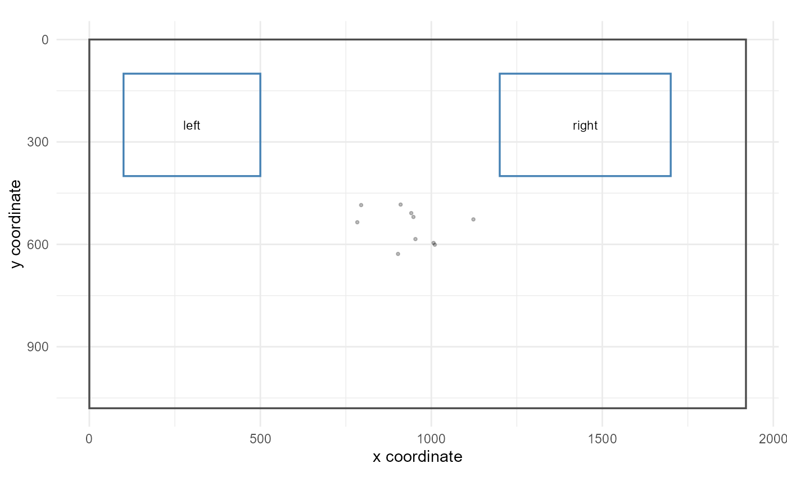

Plot stimulus-layout quality control
Source:R/stimulus_layout_qc_extensions.R
plot_gazepoint_stimulus_layout_qc.RdDraws screen/stimulus bounds, rectangular AOIs, and optional gaze coordinates. The plot is intended for visual quality review of coordinate systems, AOI placement, and gaze coverage. It is descriptive and should not be interpreted as an inferential attention analysis.
Usage
plot_gazepoint_stimulus_layout_qc(
aoi_data,
screen_width,
screen_height,
aoi_col = NULL,
x_min_col = "x_min",
x_max_col = "x_max",
y_min_col = "y_min",
y_max_col = "y_max",
gaze_data = NULL,
gaze_x_col = NULL,
gaze_y_col = NULL,
reverse_y = TRUE,
show_aoi_labels = TRUE,
show_gaze = TRUE,
gaze_alpha = 0.25,
gaze_point_size = 0.7,
title = NULL
)Arguments
- aoi_data
A data frame containing rectangular AOI geometry.
- screen_width, screen_height
Numeric screen or stimulus dimensions.
- aoi_col
Optional AOI identifier column.
- x_min_col, x_max_col, y_min_col, y_max_col
Character names of AOI rectangle boundary columns.
- gaze_data
Optional data frame containing gaze coordinates.
- gaze_x_col, gaze_y_col
Character names of gaze-coordinate columns in
gaze_data.- reverse_y
If
TRUE, reverses the y-axis to match common screen coordinate conventions with the origin at the top-left.- show_aoi_labels
If
TRUE, AOI labels are drawn at rectangle centres.- show_gaze
If
TRUE, gaze points are shown whengaze_datais supplied.- gaze_alpha
Opacity of gaze points.
- gaze_point_size
Size of gaze points.
- title
Optional plot title.
Examples
aoi <- data.frame(
aoi = c("left", "right"),
x_min = c(100, 1200),
x_max = c(500, 1700),
y_min = c(100, 100),
y_max = c(400, 400)
)
gaze <- simulate_gazepoint_pupil_data(n_subjects = 1, n_trials = 1, n_time_bins = 10, seed = 1)
plot_gazepoint_stimulus_layout_qc(
aoi,
screen_width = 1920,
screen_height = 1080,
aoi_col = "aoi",
gaze_data = gaze,
gaze_x_col = "gaze_x",
gaze_y_col = "gaze_y"
)
